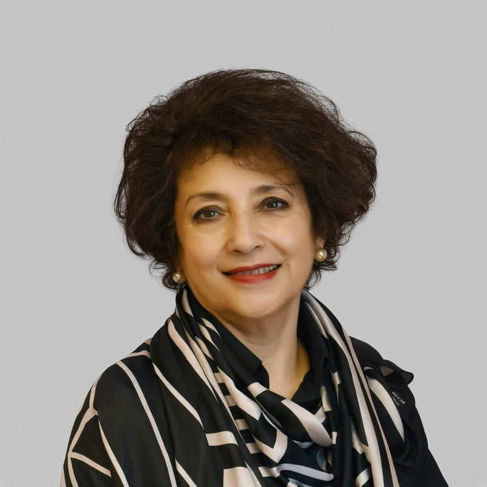

ARS
ARDENT
RESEARCH
SOLUTIONS
ARS INSIGHT
IN THE AUTHOR’S WORDS
“
Many of the mothers most at risk are girls who were married before 18, and the state often meets them for the first time in a labour ward.
194 vs 99
maternal deaths per 100,000 live births
among mothers aged 15 to 19, against
those aged 20 to 24 (2019)

Dr. Rubina Fareed
Physician; former Member,
National Commission on the Rights of Child
Child Marriage and Pakistan’s Maternal Health Divide